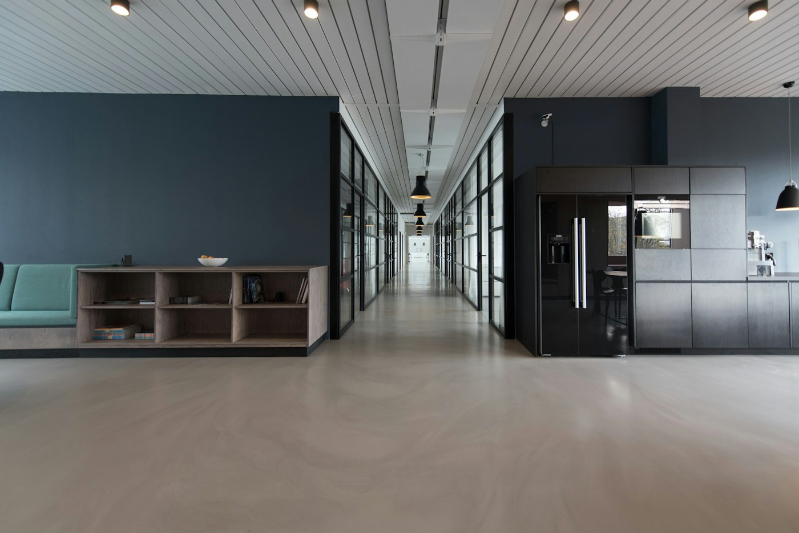

Learn moreHero background video: a Fullsteam sizzle reel.
For founders, investors, and the teams who build the software
We acquire great software companies.
Then we build what makes it grow.
How a Fullsteam company compounds.
-
Step 01
Acquire
We acquire great vertical software companies.
70,000+
customers rely on our software
-
Step 02
Grow
Our AI and embedded fintech unlock new growth opportunities.
$75B
in sales processed through our software
#20
largest payment processor
-
Step 03
Lead
We built the next generation of AI-powered vertical software.
2,000+
employees across our companies
11
vertical markets, each a system of record
AI that already knows the business.
Use cases first — built on proprietary vertical data, not generic models.
-
01
Modernize existing software
Smarter search, forecasting, and workflows inside the product customers already run — no migration, no re-platforming.
-
02
Build new AI customer-facing features
Ship AI your end customers feel, grounded in the vertical’s own data rather than a generic model.
-
03
Automate business workflows
Invoicing, scheduling, reconciliation — the back office runs itself, and people stay on judgment calls.
Intelligence is people.
Keep the businesses growing.
Growth needs more than ownership — it needs intelligence.
For founders
A home for the business you built.
We don’t buy your business and shelve it. The product keeps its name, the team keeps its people, and it keeps growing — with a much larger company behind it.
“We stopped asking what to build next and started asking where everything we had built could go.”
A great place to work.
Real people building software for real industries — mostly remote, small teams, room to grow.
-
The founder
“We sold to a company that wanted what we had built to keep working. Two years on it still runs on our name, our team, and our roadmap.”
Founder, acquired vertical software company
-
The founder who stayed
“I came in as the founder of a six-person team. The difference was what came next: I stayed, and I now run a business three times the size.”
Founder, now leading a larger business unit
-
The employee
“Nobody here is a ticket in a queue. You learn the industry, you talk to the customers, and you ship.”
Support engineer, Fullsteam


From the company page
Straight from the Fullsteam page on LinkedIn — hiring, people, and product news.
Fullsteam
Oct 2026 · Public
Supporting our customers starts with our people and the expertise they bring. We’re hiring a Senior Information Security & Compliance Business Partner.
Now hiring
Senior Information Security & Compliance Business Partner
Apply at fullsteam.com/careers
See the post on LinkedIn
Fullsteam
Oct 2026 · Public
Career growth can take many forms. For Xavier Codrington, it has meant taking on new challenges and growing into a leadership role.
Fullsteam Voices
Xavier Codrington
Manager, Operations — on ownership, support, and room to build.
See the post on LinkedIn
Fullsteam
Jul 2026 · Public
We’re proud to celebrate our Vice President and CISO, Emily Traylor, on receiving Auburn’s 2026 Young Alumni Achievement Award.
Auburn Alumni Association
2026 Young Alumni Achievement Award
Emily Traylor ’10 · VP & CISO
See the post on LinkedIn
Fullsteam
Jun 2026 · Public
Hotels and resorts have long used revenue management to optimize room inventory. With Priswing, golf resort operators can price the same way.
HITEC 2026 · San Antonio
Bringing golf into the hospitality technology conversation
Booth #1252 · Fullsteam Hospitality
See the post on LinkedIn
Fullsteam
Apr 2026 · Public
Each year the Nilsen Report maps the companies shaping the payments industry. Fullsteam moved up to #28 among top U.S. merchant acquirers, climbing five spots — and was named among the fastest-growing by volume processed.
Nilsen Report
Breaking into the top 30
#28 among U.S. merchant acquirers · up five spots
See the post on LinkedIn